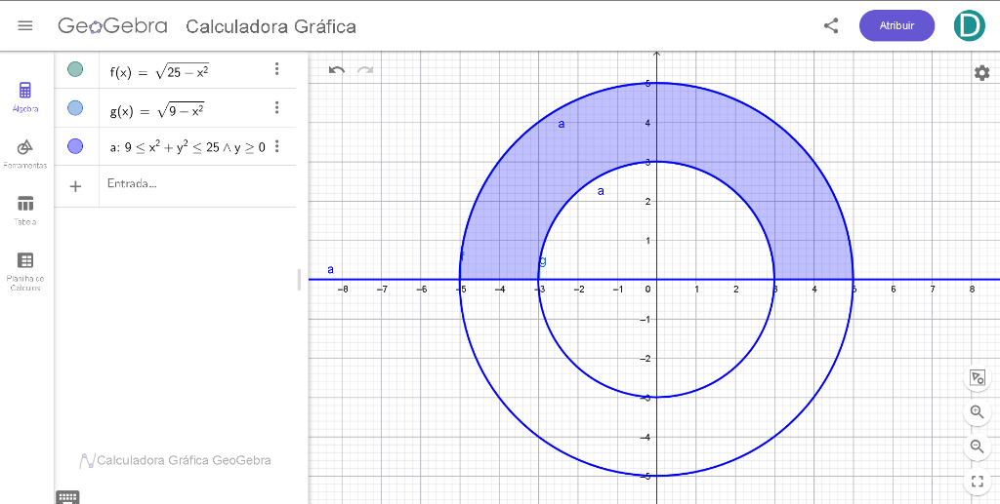
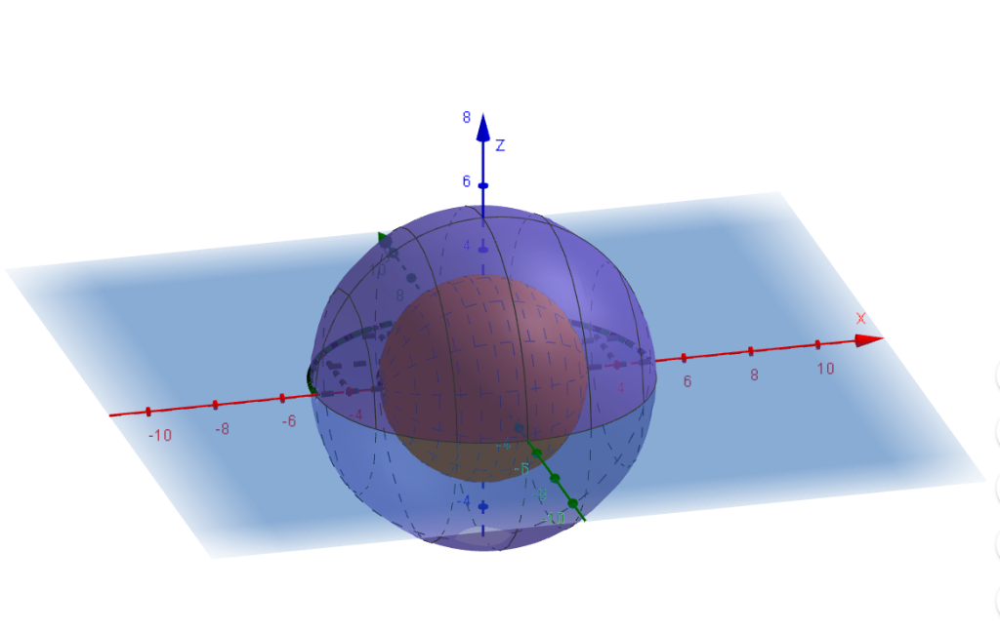
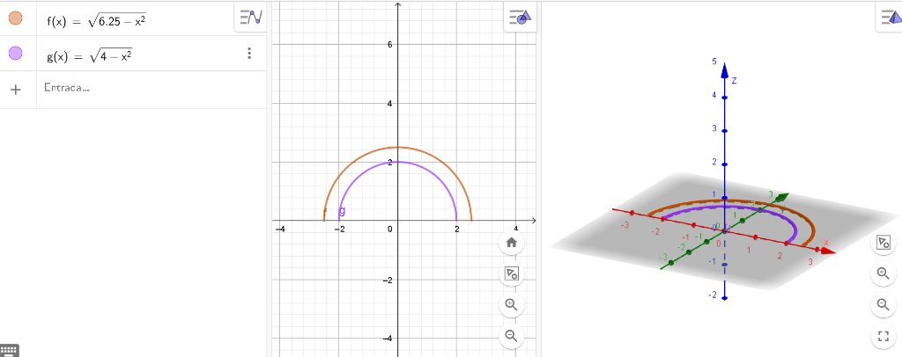
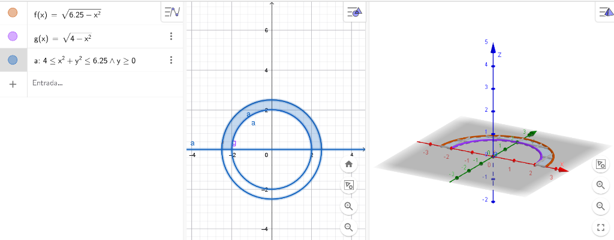
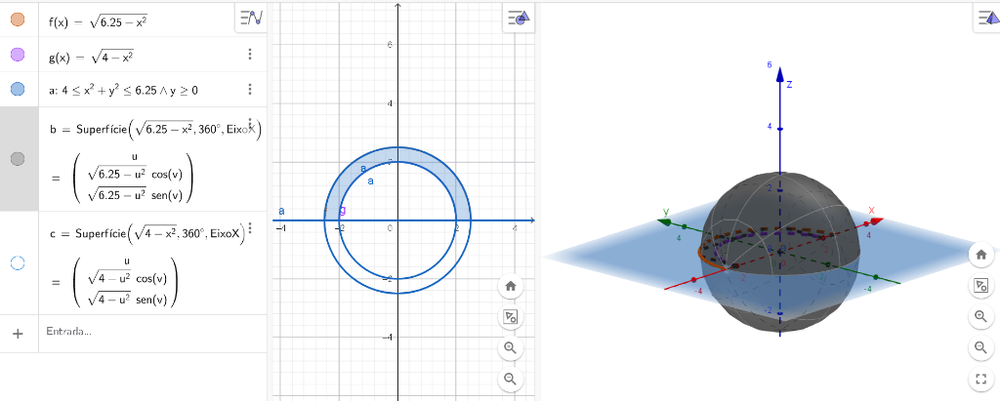
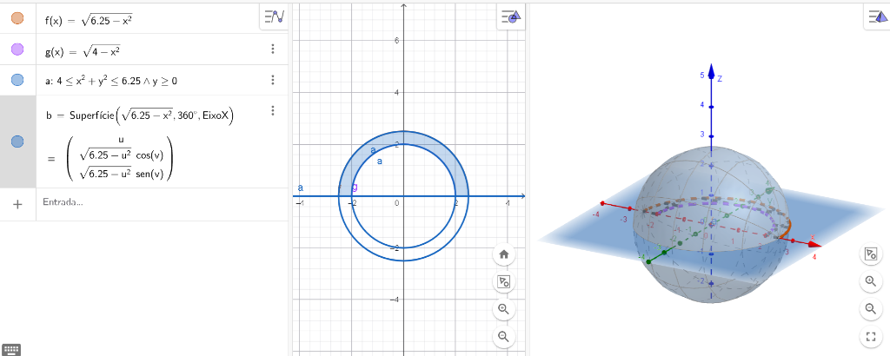

UNIVERSIDADE FEDERAL DE PELOTAS
Instituto de Física e Matemática
Departamento de Educação Matemática
Curso de Licenciatura em Matemática a Distância
Casca de Esfera
Região delimitada por duas esferas concêntricas: fundamentação formal no $\mathbb{R}^3$, dedução analítica pelo Método dos Discos e aplicações industriais e criogênicas.
Estrutura das 4 Etapas Obrigatórias
Fundamentação Matemática
Definição formal no $\mathbb{R}^3$, 5 elementos geométricos individuais e modelagem no GeoGebra.
Dedução da Fórmula do Volume via Cálculo Diferencial
Justificativa dos Discos (teto e piso imediatos), desenvolvimento passo a passo e Teorema Fundamental.
Aplicação das Fórmulas (Problema Numérico)
Flutuador mecânico de aço sob alta pressão ($R=10\text{ cm}, e=2\text{ cm}$), cálculo e conversão ao SI ($0{,}002044\text{ m}^3$).
Aplicação Contextualizada
Tanque criogênico de hidrogênio líquido a $-253^\circ\text{C}$, volume da casca de perlita e discussão crítica.
1. Definição Formal no $\mathbb{R}^3$ e Região Geradora
A casca esférica (ou coroa esférica) é um sólido de revolução tridimensional gerado pela rotação de uma região plana $\mathcal{R}$, contida no plano cartesiano $\mathbb{R}^2$, em torno do eixo das abcissas (eixo $x$).
Região plana geradora $\mathcal{R}$ no semiplano superior ($y \ge 0$):
Superfícies de Fronteira no $\mathbb{R}^3$
- Fronteira Externa: $S_{\text{ext}}: x^2 + y^2 + z^2 = R^2$ ($R = 5$)
- Cavidade Interna: $S_{\text{int}}: x^2 + y^2 + z^2 = r^2$ ($r = 3$)
- Sólido Tridimensional: $r^2 \le x^2 + y^2 + z^2 \le R^2$
Se considerássemos o anel circular completo ($y \in [-R, R]$) e rotacionássemos $360^\circ$ em torno do eixo $x$, o semicírculo inferior varreria o mesmo espaço já ocupado pelo superior, duplicando o volume ($720^\circ$). A restrição a $y \ge 0$ garante a bijetividade geométrica da revolução.
2. Propriedades Geométricas e Elementos Constituintes ($R=5, r=3$)
Representação gráfica individual ampliada para cada elemento métrico fundamental — adotando o modelo didático com $R = 5\text{ cm}$ e $r = 3\text{ cm}$ ($e = 2\text{ cm}$):
Centro $C(0,0,0)$
Definição: Origem fixa do sistema tridimensional.
Exemplo: Ponto $C(0,0,0)$ de simetria radial absoluta.
Raio Externo ($R$)
Definição: Distância do centro à casca exterior.
Exemplo Didático: $R = 5\text{ cm} \implies V_{\text{ext}} = \frac{4}{3}\pi R^3$.
Raio Interno ($r$)
Definição: Raio da cavidade oca interior.
Exemplo Didático: $r = 3\text{ cm} \implies V_{\text{int}} = \frac{4}{3}\pi r^3$.
Espessura da Parede ($e = R - r$)
Definição: Diferença entre raios externos e internos ($e = R - r$).
Exemplo: Espessura da chapa $e = 2\text{ cm}$. Se $e \to 0$, tende à casca delgada ideal de área $4\pi R^2$.
Simetria Radial e Axial ($O(3)$)
Definição: Simetria esférica plena (invariante sob rotações e reflexões ortogonais).
Exemplo: Infinitos planos axiais dividem a casca em hemisférios idênticos invariantes.
3. Modelagem Computacional no GeoGebra ($R=5, r=3$)
Construção autoral das curvas semicirculares geradoras e revolução 3D para os parâmetros didáticos de referência:
Gráfico 2D no GeoGebra: Curvas e Região Sombreada

geogebra_2d.png nesta pasta.
Janela de Visualização 3D do GeoGebra: Revolução no Eixo $x$

geogebra_3d.png nesta pasta.
Método dos Discos vs. Cascas Cilíndricas
1. A Vantagem dos Discos: Função Teto e Piso Imediatas
No fatiamento perpendicular ao eixo $x$, as fronteiras superior e inferior são imediatas e elementares:
- Esfera Externa: $\text{Teto} = f(x) = \sqrt{R^2 - x^2}$ e $\text{Piso} = y = 0$.
- Esfera Interna: $\text{Teto} = g(x) = \sqrt{r^2 - x^2}$ e $\text{Piso} = y = 0$.
Cancelamento Direto da Raiz: A área da seção transversal é $\pi [y(x)]^2 = \pi (\sqrt{R^2 - x^2})^2 = \pi (R^2 - x^2)$. A raiz quadrada anula-se na hora com o expoente quadrático!
2. A Complexidade Inviável das Cascas Cilíndricas
- Integração com Raízes Complicadas: Integrando em $y$ em torno do eixo $x$, o integrando conteria $2\pi y \sqrt{R^2 - y^2}$.
- Divisão em Duas Regiões no Eixo $y$: A casca teria que ser fatiada em $[0, r]$ (diferença entre duas esferas) e em $[r, R]$ (apenas esfera externa), tornando as contas longas e desnecessárias.
Passos 3.1 & 3.2: Montagem da Equação e Simplificação
A fórmula geral do volume por revolução no eixo $x$ é dada por: $V = \pi \int_{a}^{b} [y(x)]^2 dx$
Substituímos as funções geradoras $f(x)$ e $g(x)$ na fórmula geral de revolução:
Cancelamos a raiz quadrada com a potência quadrática, pois $(\sqrt{u})^2 = u$ para $u \ge 0$:
Passo 3.3: Calculando a Antiderivada (Primitiva)
Aplicação minuciosa das regras fundamentais de integração do Cálculo B:
Lembrando que $R$ e $r$ são constantes fixas em relação à variável de integração $x$:
Aplicando a regra da potência $\int x^n dx = \frac{x^{n+1}}{n+1}$ com $n = 2$:
E de forma idêntica para o raio interno, substituindo o parâmetro $R$ por $r$: $\int (r^2 - x^2) dx = r^2 x - \frac{x^3}{3}$.
Passo 3.4: Teorema Fundamental do Cálculo
Substituição completa nos limites superior e inferior: $\int_{a}^{b} f(x) dx = P(b) - P(a)$
Avaliando de $-R$ a $R$
Avaliando de $-r$ a $r$
O desenvolvimento algébrico é rigorosamente análogo, trocando a constante $R$ por $r$ nos limites $[-r, r]$:
Passo 3.5: Fórmula Final Deduzida
Subtraindo o volume da esfera interna da esfera externa:
Colocando $\frac{4}{3}\pi$ em evidência:
Interpretação Infinitesimal e Conexão com a Derivada
Fatorando a diferença de cubos $R^3 - r^3 = (R - r)(R^2 + Rr + r^2) = e(R^2 + Rr + r^2)$:
Quando a espessura $e \to 0$ ($r \to R$), temos $(R^2 + Rr + r^2) \to 3R^2$:
Isso comprova que a taxa de variação do volume em relação ao raio é a área da superfície esférica: $\frac{dV}{dR} = 4\pi R^2$!
Problema Industrial: Flutuador Mecânico de Aço
Enunciado Oficial da Aplicação
Uma indústria metalúrgica fabrica esferas ocas de aço inoxidável para atuarem como flutuadores mecânicos de nível em caldeiras e reservatórios sob alta pressão.
Cada flutuador possui:
- Raio Externo: $R = 10\text{ cm}$
- Espessura da parede de aço: $e = 2\text{ cm}$
Pergunta: Qual é o volume de aço necessário para fabricar um flutuador? Expresse em $\text{cm}^3$ e no Sistema Internacional de Unidades ($\text{m}^3$).
Dedução do Raio Interno Útil ($r$)
Sabendo que a espessura é a diferença direta entre os raios ($e = R - r$):
Parâmetros identificados: $R = 10\text{ cm}$, $r = 8\text{ cm}$ e $e = 2\text{ cm}$.
Cálculo Numérico e Conversão para o SI
1. Resolução Passo a Passo em $\text{cm}^3$
2. Conversão Rigorosa para o SI ($\text{m}^3$)
No Sistema Internacional, a unidade padrão de volume é o metro cúbico ($\text{m}^3$):
Armazenamento Criogênico de Hidrogênio ($LH_2$)
Contexto de Engenharia Aeroespacial
O hidrogênio líquido ($LH_2$) é o combustível espacial mais eficiente, porém necessita ser mantido a $-253^\circ\text{C}$ (apenas 20 Kelvin).
Qualquer influxo de calor causa ebulição espontânea e perda crítica de combustível. Para isolamento máximo, projeta-se um tanque esférico de parede dupla com vácuo e perlita expandida.
Dimensões Projetadas pelo Grupo
- Raio Interno (Recipiente de $LH_2$): $r = 2{,}0\text{ m}$
- Raio Externo (Blindagem de Aço): $R = 2{,}5\text{ m}$
- Espessura do Isolamento: $e = R - r = 2{,}5 - 2{,}0 = 0{,}5\text{ m} = 50\text{ cm}$
A camada de isolamento térmico constitui exatamente uma casca esférica no $\mathbb{R}^3$!
GeoGebra: Curvas Geradoras 2D e Seção de Revolução $180^\circ$
Modelagem da camada de isolamento térmico do tanque criogênico ($R = 2{,}5\text{ m}, r = 2{,}0\text{ m}$):
Curvas Geradoras 2D e Eixo de Rotação $x$

Região Sombreada e Corte Transversal $180^\circ$

GeoGebra: Superfícies Paramétricas 3D e Casca Translúcida
Geração analítica da casca tridimensional e evidenciação da cavidade criogênica de $LH_2$:
Álgebra Paramétrica e Casca Sólida Completa

Casca Translúcida e Cavidade Criogênica Oca

Cálculo do Volume da Camada Isolante de Perlita
Determinação do volume exato de material isolante necessário para envolver o tanque de $LH_2$:
Aplicação da Fórmula Deduzida
Resultado Analítico e Massa Estimada
Considerando a densidade típica da perlita expandida ($\rho \approx 120\text{ kg/m}^3$):
Viabilidade Prática e Limitações do Modelo Puro
1. Viabilidade Físico-Prática
O volume calculado de $31{,}94\text{ m}^3$ representa cerca de 3,8 toneladas de material particulado que exigem suporte estrutural robusto na base de lançamento.
Além disso, a variação térmica extrema ($-253^\circ\text{C}$ a $+30^\circ\text{C}$) causa contração diferencial entre as paredes de aço e o isolamento.
2. Limitações do Modelo Matemático Contínuo
O Cálculo Integral de Riemann assume um sólido fechado, simplesmente conexo e perfeitamente contínuo.
No mundo real, o tanque requer tubulações de abastecimento, linhas de alívio e sensores que perfuram a casca esférica, quebrando a simetria perfeita e superestimando ligeiramente o volume contínuo de isolamento.
Considerações Finais
A integração entre a Geometria Espacial no $\mathbb{R}^3$, o Método dos Discos no Cálculo Diferencial e as Aplicações Práticas de Engenharia
Rigor no Cálculo B
Dedução completa pelo Método dos Discos, demonstrando a antiderivada e aplicação do Teorema Fundamental do Cálculo passo a passo.
Aplicação Industrial
Validação da fórmula $V = \frac{4}{3}\pi (R^3 - r^3)$ em escala mecânica para flutuadores de aço e escala criogênica aeroespacial ($LH_2$).
Espírito Crítico Docente
Compreensão das limitações do modelo contínuo frente a restrições físicas de engenharia real.